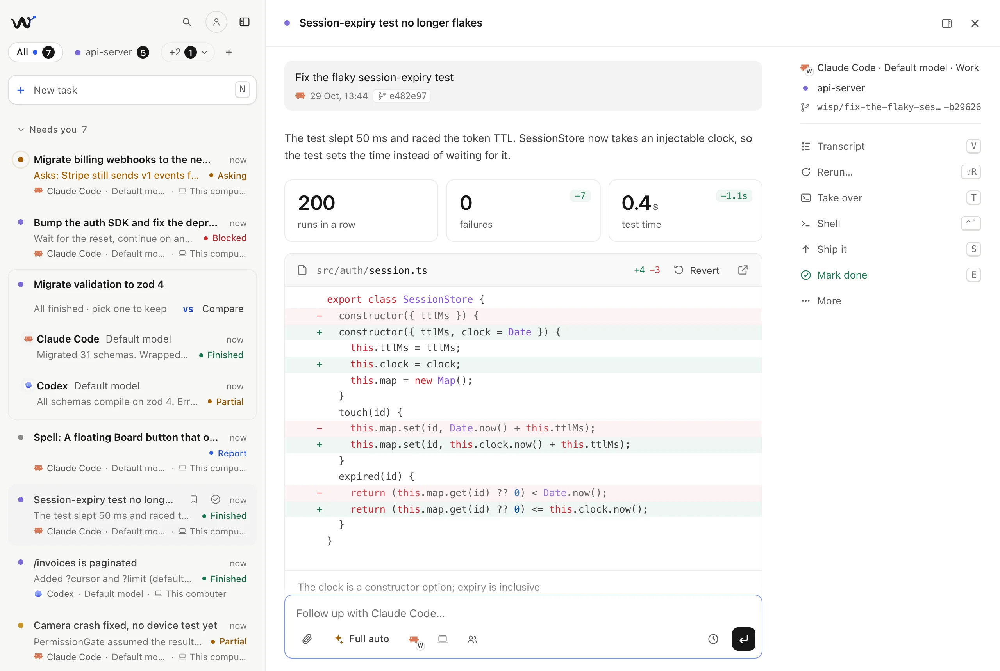
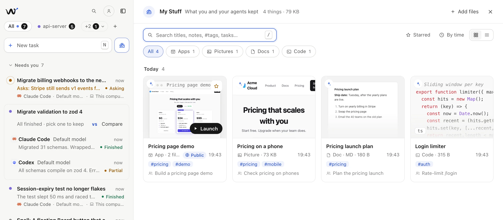

Your new way
to build.
One place to run, orchestrate and ship the work of Claude Code, Codex and all your coding agents, on any machine, from anywhere. Open source, MIT.
- OrchestrationAgents hand work to other agents.
- Every modelMix harnesses and models in one task.
- Every machineYour laptop, your servers, wisp Cloud.
- A crewNamed agents with faces and schedules.
- Clean reportsDiff, tests, decisions. No transcript.
- $0 on topYou only pay for the plans you have.
wisp Cloud · free preview · nothing to install
macOS · Linux and Windows in beta · Node 20+ · MIT

Same run. Pick what you'd rather read.

- Real diffs. Captured from the agent's own edits, not summarised. Revert one file, or roll back the whole turn.
- Real tests. The command it ran and the result. Re-run it from the card.
- Next steps. One click turns a suggestion into a follow-up in the same session.
- Your call. E marks it done and opens the next one. T takes it over in your terminal.
Hire a crew. They keep working while you don't.
A crew member is an agent with a name, a face, a brief and a schedule. Scout watches CI and fixes what breaks, Quill reviews new pull requests, Sorter triages issues. They check in on their own, stay quiet when nothing changed, and remember what they learned.
- Fresh context, real memory
- Every job is a task of its own, so several run side by side. What carries over is small: your brief, their notebook, and a one-line log per job.
- An org chart
- Org on the Crew heading shows who hands work to whom. Click + on a card, or drag one onto another, to give a member a delegate.
- @Name anywhere
- Tag them in any prompt or follow-up, put them on a team as a delegate, send them a trigger, or run them on another machine.
How the crew works →Organize your crew →Agents in the background →
Say when it's done. wisp checks.
Turn on Goal and write what has to be true: Done when all tests pass and the login page works on a phone. After every round, wisp runs the tests and has a model read the diff. Until the goal holds, the agent gets the task back with what's missing.
- Round 1Not yet2 auth tests still fail: session expiry and token refresh
- Round 2Not yetTests pass; the form is 412px wide on a phone
- Round 3MetAll 48 auth tests pass and the form fits at 390px
- Evidence, not claims
- The agent saying it's done counts as a claim. A met goal needs passing tests and a diff that shows it.
- One ping
- The task stays in Working until it's met, can't be met or goes in circles.
- Any harness
- Works with Claude Code, Codex, opencode and Cursor. A hand-over from Auto to a stronger model keeps the goal.
Run two agents. Keep the winner.
Click vs in the launcher and one prompt runs on two harnesses at once, each in its own worktree. wisp lines them up: time, cost, files, tests, and both reports. Keep this archives the other. Claude Code vs Codex on your own repo →
Start on your laptop. Finish on the dev box.
Sign in to wisp Cloud from your laptop's Machines and it holds a tunnel open to the grid. Your phone and your other computers open it from anywhere and launch on it, or on several at once. Mid-task, the button next to the follow-up box moves the task: its branch, uncommitted changes and history go along, and the agent there carries on. The same follow-up can switch from Claude Code to Codex.
No SSH, Tailscale or open portYour phone sees it too- Through the grid
- One sign-in in Machines → Reach this computer from anywhere. The grid checks it's you, forwards, and keeps nothing.
- Or plain SSH
- For servers, VMs and boxes on your network: your keys and
~/.ssh/config, nothing new listening. - The work moves
- A git bundle lands in a worktree on the same branch. No checkout there? wisp clones it.
- So does the story
- The next agent gets every earlier request, report and edited file.
Reach your laptop from anywhere →Move a task mid-way →Machines over SSH →SSH with Tailscale →
One lead. A team on every machine.
Give the lead agent a team in Delegate. Each delegate runs where you put it: next to the lead, or on your GPU box or dev server with the model installed there. The lead hands out the work, and changes made on other machines come back to its worktree as a patch.
- Where each one runs
- With the lead, it shares the folder and sees edits as they happen. On a machine, it gets a copy of the lead’s work there, uncommitted edits too.
- A model per machine
- The harness picker lists what’s installed where the delegate runs, so the GPU box can run a heavier model than your laptop.
- Changes come home
- As a patch into the lead’s worktree, merged three ways if the lead moved on. A clash is named in the report, never lost.
Delegate to another machine →Split one task across machines →Multi-agent coding →
Keep what they make. Share it with a link.
Pictures, docs, code and small web apps your agents build land in My Stuff, as copies that stay when the worktree goes. Launch an app inside wisp, @ it in your next prompt to change it, and Publish puts it at a public link on your wisp Grid that works while your laptop sleeps.

- Saved by asking
- Say save that to my stuff and the agent does. Every picture, doc and code block in a reply has a Save button too.
- Apps that run
- An agent builds a static app and saves its folder. Launch opens it inside wisp; it can keep data in a SQLite database of its own.
- One link to send
- Ask publish it, or click Publish. Anyone with the link opens it, no sign-in. After a change, Update link keeps the address.
Keep what your agents make →Publish an app your agent built →
Want wisp to work your way? Cast a spell.
Ask for a button, a panel, quick replies or a whole new look. An agent writes it as a spell: a small file wisp layers over itself. Keep it, share it, or switch it off and wisp is back as it was.
- Any agent writes it
- Claude Code, Codex or any harness wisp runs, in an empty folder of its own. wisp checks the spell before you see it.
- Sandboxed by design
- Spell code gets data and returns blocks. No network, no page, no wisp API. Data comes from read-only routes and
gh. - Shared as a file
- A
.spell.json, pasted JSON or a gist link. It shows the same review and stays off until your colleague turns it on.
Pick the agent, set the leash, take the wheel.
Choose who runs a task and how much it may do on its own. When you’d rather drive, the same session opens in your terminal.
- Auto learns
- It picks a harness and model from what worked before: what you merged, your thumbs up or down, how many follow-ups a run needed.
- Recipes and triggers
- Save the prompts you keep retyping;
{version}becomes a field. Run them on a schedule, when CI fails on main, or when an issue gets a label. - Switch mid-task
- Model and thinking level are per task, and a follow-up can hand the task to another harness with its history.
Run Claude Code and Codex in parallel →Agents in the background →
Or never leave your shell.
wisp "…" launches a task in the current folder and starts the app if it isn't running. --wait blocks until the run is done and prints the report as markdown, so scripts, CI and other agents can use wisp too.
Try it in the terminal: type a command, or pick one under it.
Also: an MCP server (wisp mcp), an agent skill, a JS SDK, an HTTP API and webhooks. Integrations →
Also in the box
- Several folders
- One task can span the API and the web app that uses it. Each repo gets its own worktree, and Ship it opens a PR in each.
- Delegate
- Give the lead a team on other harnesses and other machines. Claude Code can hand tests to three Codex copies, and a refactor to Claude on your GPU box, through a
delegatetool. Multi-agent coding → - Checkpoints
- Every turn is snapshotted before it starts. Restore to before any turn, or revert one file.
- It learns
- After a session, a short retro records your preferences and the agent's mistakes. Later runs get them in their prompt.
- Phone
- Questions and finished tasks go to ntfy or Telegram. Answer from there, or start a task with
/new. - Keyboard
- N new, J/K move, O open, E done and next, ⌘K search everything.
- Attachments
- Paste a screenshot, drop a screen recording, a log or a PDF into the launcher.
- Usage
- Spend, success rate and questions asked, per project and per harness and model.
- Small and local
- A Node server with zero runtime dependencies and a vanilla JS UI. State is plain JSON in
~/.wisp.
Or skip the install.
wisp Cloud is a free early preview, opening seats as it grows. Your own wisp on a server: sign in with GitHub or Google, give it a task, close the laptop, and read the report on your phone. Open it from the browser, the desktop app or the phone app, along with your own computers, which you add to it from Machines. wisp on your computer stays free.
Pick the task you've been putting off.
A flaky test, a dependency bump, a small bug. You'll be set up in about a minute.
- 1Node 20+ and one agent CLI, signed in
Claude Code, Codex, Cursor CLI, opencode, Antigravity CLI, Grok Build or GitHub Copilot CLI.
- 2Get wispDownload for macOS.dmg
npx wisp-agentsNode 20+. Opens the desktop app; add --browser for localhost:4477.
- 3Describe it, pick the folder, press Enter
Then go do something else. wisp tells you when it's done or needs you.
Questions
What is wisp?
wisp is a free, open-source launcher for AI coding agents. It runs agents like Claude Code and Codex on your projects in the background. When one finishes, it hands you a short report (the diff, test results, commits and next steps) instead of a long transcript.
Which coding agents does wisp support?
Claude Code (claude), OpenAI Codex (codex), opencode, Cursor CLI (cursor-agent), Antigravity CLI (agy), Grok Build (grok) and GitHub Copilot CLI (copilot). Each harness is one adapter file, so adding another is small.
Can I run Claude Code and Codex in parallel?
Yes. Every task runs in its own git worktree and branch, so Claude Code, Codex and the other agents can work on the same repo at the same time without colliding. Click vs in the launcher (or pass --compare codex) to run one task on both and keep the better run. Guide →
Can wisp run agents on several machines?
Yes. Add each computer to wisp Cloud from its Machines: it holds a tunnel open to the grid, so your other computers and your phone reach it from anywhere with no SSH or open port (guide →). One prompt can run on several machines in parallel, every run lands in one queue, and the agents keep working when your laptop sleeps. For servers and VMs, Machines also connects over SSH and starts wisp there, on your network or over Tailscale: Tailscale guide → Machines guide →
Can my agents keep working when my laptop is closed?
Yes, if they run on a computer that stays on. Connect a desktop or VM through Machines, or use wisp Cloud: your own wisp on a server, free during the preview. Sign in with GitHub or Google, sign in to Claude Code or Codex with a code, give it a task and close the laptop; the report waits on your phone. Run Claude Code 24/7 without a VPS →
Can I move a task to another computer or agent mid-way?
Yes. Pick another computer with the Runs on button next to the follow-up box, and your next follow-up moves the task there: the branch and uncommitted changes travel as a git bundle into a worktree on the same branch, and the agent gets the earlier turns. The harness button next to it switches agents, say from Claude Code to Codex, in the same follow-up. Guide →
Can I use my work and personal Claude Code accounts?
Yes, for Claude Code and Codex. Add the second account in Settings → Agents and pick which one each task runs on; settings, skills and MCP servers are shared, the login isn't. Each account keeps its own limits: when one runs out, the task asks you what to do, and wisp never switches accounts on its own. Only add accounts that are yours. Guide →
Can I share an app my agent built?
Yes. Agents save what they make to My Stuff, including small static web apps, which you launch inside wisp. Signed in to a wisp Grid (Settings → Cloud), or in your cloud wisp, Publish on the app (or asking the agent to publish it) puts it at a public link like pricing-demo--app--you.grid.trywisp.dev. Anyone with the link opens it without signing in, and it stays up while your computer sleeps. Guide →
Is wisp free?
Yes. wisp is MIT-licensed and free. You use your existing Claude Code, Codex, opencode, Cursor, Antigravity, Grok or GitHub Copilot account, and those providers bill as usual.
Does my code leave my machine?
wisp itself is a local server. Sessions and state are plain JSON in ~/.wisp. Your code only goes to the agent provider you choose, same as running that CLI directly. wisp sends anonymous usage stats with no prompts, paths or agent output. Turn them off with WISP_TELEMETRY=0 or DO_NOT_TRACK=1.
Can I take over a session in my terminal?
Yes. Press T and wisp opens your terminal in the project with the agent's resume command, for example claude --resume <id>. It works with Terminal, iTerm, Ghostty, Warp, kitty, WezTerm, Windows Terminal and more.
Can other tools send tasks to wisp?
Yes. wisp ships an MCP server (wisp mcp), an agent skill, a scriptable CLI, a JS SDK, an OpenAPI-described HTTP API and webhooks. You can hand tasks to it from other agents, editors, scripts or CI.
How do I install wisp?
Install Node.js 20 or later and sign in to at least one supported agent CLI. Then run npx wisp-agents to open the desktop app (or download it for macOS, Windows or Linux), or npx wisp-agents "fix the flaky auth test" to launch a task in the current folder.